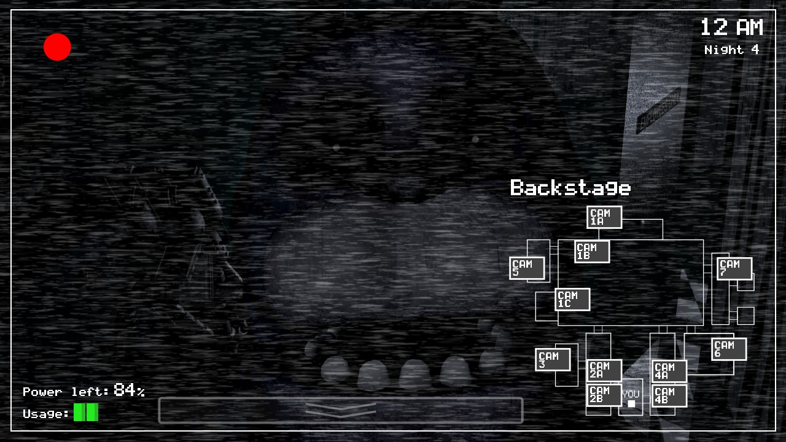
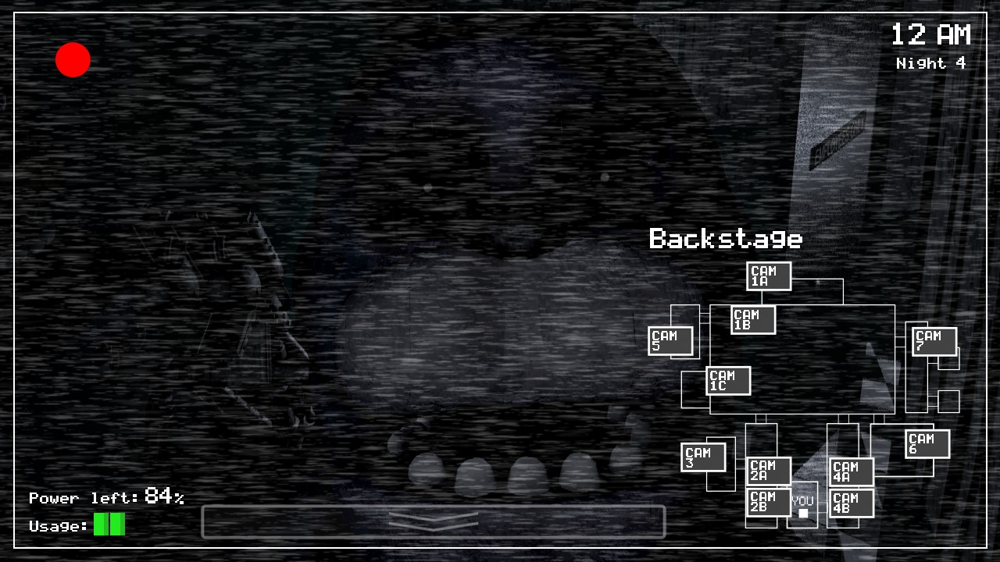
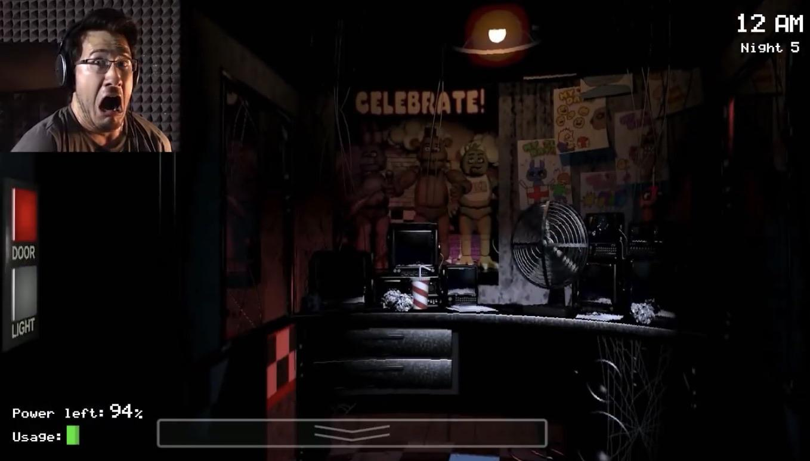

FNAF
About
This site is meant to describe the different mechanics and myths about the original Five Nights at Freddy's game(FNAF). This includes the main mechanics for all the main animatronics and unique events.
 

Brief History
FNAF was released in 2014 by Scott Cawthon and is considered the predecessor of the mascot horror genre. The Game gained popularity with many popular youtubers playing the game.
